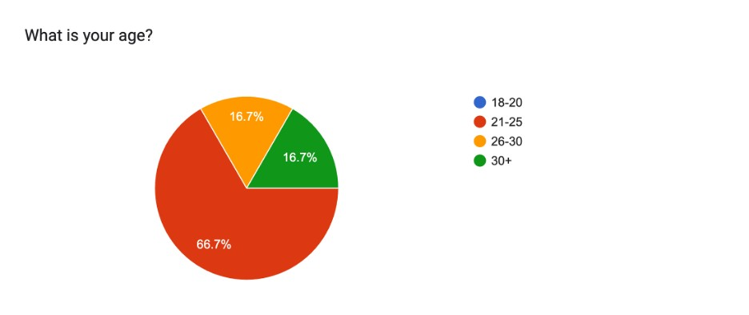
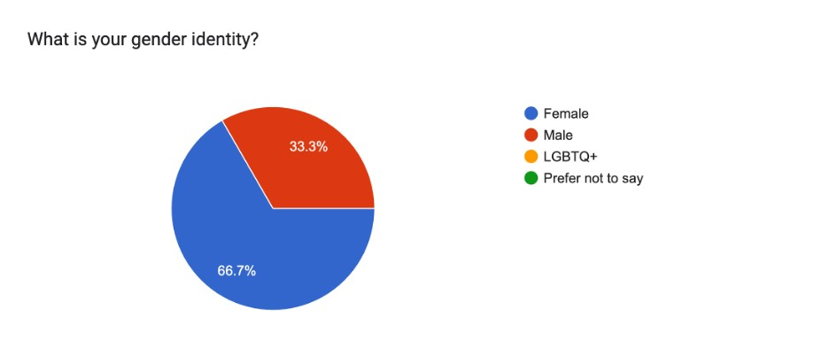
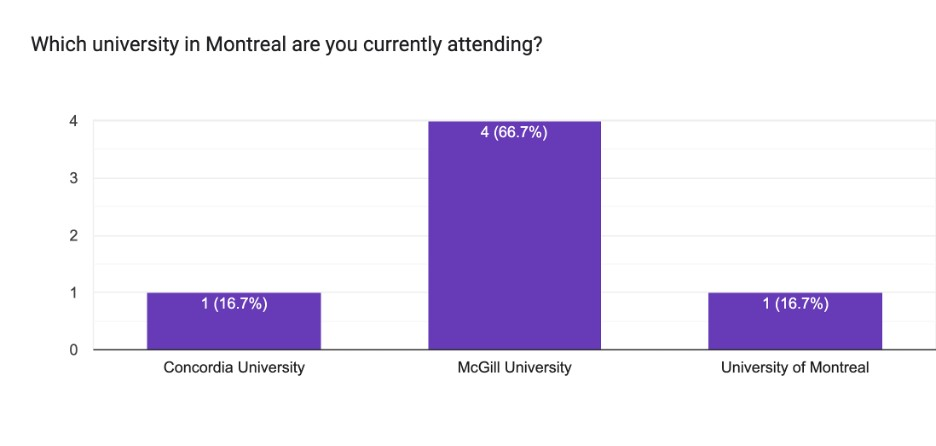
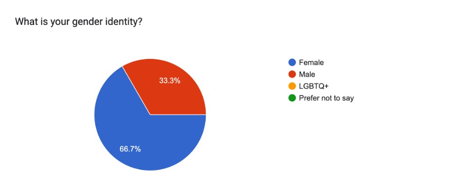
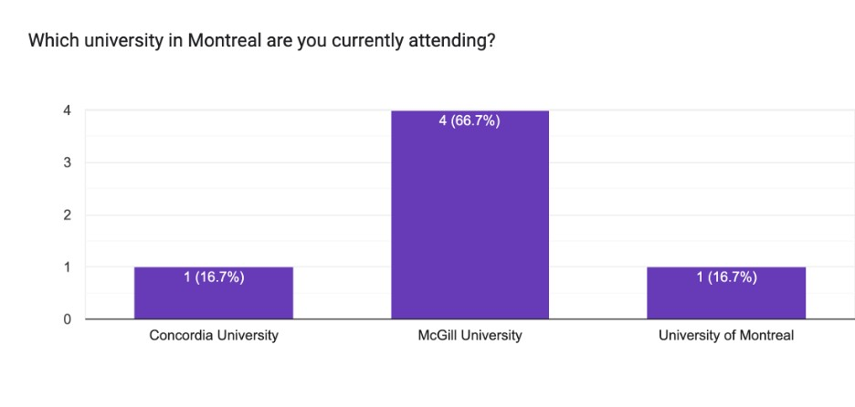

Exploring the Impact of Video Content Creation on Career Aspirations in Montreal's University Students
February 21, 2024
Researcher
Stephen Cheng, Master of Arts in Education and Society, Department of Integrated Studies in Education, McGill University.
Email: jiechao.cheng@mail.mcgill.ca
Title of Project
From Screen to Dream: Exploring the Impact of Video Content Creation on Career Aspirations in Montreal's University Students
Purpose of the Study
This is an invitation to participate in a research study which I am undertaking as part of my Master of Arts in Education and Society program at McGill University. My study aims to investigate the motivations of university students in Montreal who are involved in creating video content on social media with a particular focus on its viability as a potential career. It seeks to understand the driving forces behind students' involvement in pursuing video content creation.

Introduction
Background
Social media and video content creation have become integral aspects of modern communication and entertainment. This integration not only offers new career opportunities but also provides valuable insights into how young people shape their future professions through these platforms. To explore the motivations of Montreal's university students engaged in video content creation on social media, especially regarding its potential as a career path, our project conducted semi-structured interviews with six video creators from different universities in Montreal.
Researh Question
What are the motivations driving Montreal's university students to engage in video content creation on social media platforms as a potential career path?
Related Work
| Literature source | Daugherty et al. (2008) | Bi and Tang (2020) | Buf and Ștefăniță (2020) | Hoose and Rosenbohm (2023) |
|---|---|---|---|---|
| Location of data | Internet | China | Romania | Germany |
| Self-expression as a motivation factor | Major | Major | Major | Major |
| Emotional control as a motivation factor | Non-major | Major | NA | NA |
| Economic benefit as a motivation factor | Non-major | Major | Non-major | NA |
| Social recognition and validation as a motivation factor | Major | NA | Major | NA |
Daugherty, T., Eastin, M. S., & Bright, L. F. (2008). Exploring consumer Motivations for creating User-Generated Content. Journal of Interactive Advertising, 8(2), 16–25.
Bi, X., & Tang, C. (2020). Research on the motives affecting the behavior of short video’s creators. IEEE Access, 8, 188415–188428.
Buf, D., & Ștefăniță, O. (2020). Uses and gratifications of YouTube: A comparative analysis of users and content creators. Romanian Journal of Communication and Public Relations, 22(2), 75–89.
Hoose, F., & Rosenbohm, S. (2023). Self-representation as platform work: Stories about working as social media content creators. Convergence.
Methodology
Research Method
Semi-structured interviews with open-ended questions, covering diverse aspects such as demographics, motivations for video content creation, and participants' career aspirations.
Interview Questions
Demographics
- What is your age?
- What is your gender identity?
- Which university in Montreal are you currently attending?
- What is your academic major?
Motivations
- What motivates you to create and share video content on social media?
- What do you consider the most fulfilling aspect of producing and sharing video content?
- How important is audience engagement and feedback in driving your motivation for content creation?
- How do you decide on the topics or themes for your video content? Are there particular factors or influences that shape your choices?
Career Aspirations
- Does recognition on social media affect your perception of success? Why or why not?
- Do you believe that achieving success through video content creation differs from traditional forms of success? If so, how?
- Do you consider video content creation on social media as a potential career path for yourself? Why or why not?
- Where do you see yourself in terms of video content creation in the next few years?
Participants
Totally 6 students are chosen for the interview. Participants are offered the opportunity to provide consent for one-on-one, semi-structured interviews conducted through Zoom, each lasting approximately 30-60 minutes.





Participant Summary Form
| Age | 26-30 |
|---|---|
| Gender | Female |
| Institution | McGill University |
| Program | Master of Arts in Education and Society |
| Motivation |
Self-expression: Student A, an international student, employed video creation on social media as a means of creative self-expression, sharing her campus life in Montreal to both friends and followers.
Emotional control: By receiving positive comments and responses from her audience, student A experienced a boost in her sense of accomplishment and happiness, contributing to increased confidence and fulfillment. Social recognition and validation: Through positive feedback from her audience, student A feels a sense of appreciation and recognition for her efforts and contributions to video content creation. Community Building: Creating and sharing videos enabled student A to foster a sense of community, bringing people together and encouraging interaction with her audience. This effort also led to the establishment of a committed and loyal community. The feedback and engagement from the audience served as inspiration for student A to continue producing more videos. Education and Tutorial: Engaging in video creation inspired student A to acquire new knowledge and skills, fostering personal development. By sharing these videos on social media, she was able to offer valuable living tips for studying in Canada, contributing to the well-being of others. Storytelling: Through video creation, student A utilized social media to disseminate the stories of other individuals studying in Canada. |
| Choice of Topic | Student A chose video content topics primarily from her daily life, covering subjects such as food, transportation, and restaurants. Additionally, she discussed challenges encountered during her studies in Montreal, sharing problem-solving insights. The feedback and engagement from her audience played a big role in guiding her towards popular topics, allowing her to tailor her video content to match audience preferences. Occasionally, she collaborated with friends and classmates, featuring their experiences of studying and living in Canada in her videos. |
| Perception of Success | For student A, achieving recognition on social media through video content represents success. The positive feedback and responses from her audience not only made her feel fulfilled but also affirmed that her choices were correct. Increased visibility and popularity on social media have broadened her reach and boosted her chances of gaining recognition. Another aspect of success for her involves staying true to her beliefs and identity, not simply following trends. She sees no distinction between traditional and social media success, emphasizing the importance of acknowledgment and appreciation for one's efforts. According to her perspective, success, whether through video content or traditional avenues, should have positive societal impacts, such as entertainment, education, awareness, and more. |
| Career Aspirations | From the perspective of student A, video content creation is viewed as a potential future career rather than an immediate source of income. At the time of the interview, she lacked substantial social media followers, making it challenging to earn enough for a regular life in Montreal. Moreover, the instability of income on platforms like YouTube and Instagram, coupled with intense competition, poses uncertainties about potential earnings. Striking a balance between personal passion and audience interest proves to be a complex challenge. Despite these challenges, she intends to persist in creating high-quality videos and earning money on social platforms. For her, video creation continues to be a creative pursuit, even if it doesn't transition into a full-time job in the immediate future. |
| Age | 21-25 |
|---|---|
| Gender | Male |
| Institution | McGill University |
| Program | Master of Arts in Educational Leadership |
| Motivation |
Self-expression: For student B, video content creation serves as a means of self-expression to narrate his university life and experiences in Canada. Through the process of making and sharing videos, he aims to convey his thoughts and lifestyle choices, offering insights into his life in Canada. Video creation becomes a platform for Student B to exhibit his creative abilities.
Emotional control: Engaging in video content creation brought joy and a sense of accomplishment to student B. The positive responses from the audience instilled confidence and excitement in his endeavors, motivating him to create more videos and strive for improvement. Social recognition and validation: The motivation to create and share more videos stemmed from the audience's appreciation and recognition, acting as a rewarding acknowledgment for student B's efforts and making him feel a sense of pride. The recognition from fans provided a feeling of connection and friendship. Community Building: For student B, sharing videos allowed him to connect and engage with numerous people on social media, fostering a sense of community. This experience motivated him to create more videos. The interaction between him and his audience strengthened their closeness and contributed to building loyalty within the community. Education and Tutorial: By engaging in video creation, student B had the opportunity to acquire new skills, including knowledge acquisition, video editing, storytelling, and more. |
| Choice of Topic | Student B selected video content topics based on personal interests and hobbies, such as exploring cuisine, city life, and travel adventures with friends. He shared practical living tips for students in Montreal, depicted the university experience in Canada, and captured fun moments of living in Montreal. Audience feedback, both positive and negative, served as inspiration for him to create videos that resonated with viewers and uplifted them. Additionally, suggestions from social media followers inspired him to choose topics and improve the quality of his videos. |
| Perception of Success | Recognition on social media for his video content gave student B a sense of success and pride. Creating video content led to collaborations and partnerships, serving as a significant reward. However, he distinguishes success in video creation from traditional forms due to its accessible entry, success metrics (views, likes, subscribers), and the creative and innovative nature compared to traditional careers. |
| Career Aspirations | Currently, student B does not view video content creation on social media as a full-time job, despite earning some income through ads, partnerships, and donations. He perceives the social media revenue model as risky and unstable, not sufficient to cover daily living expenses in Montreal without a substantial subscriber base. Acknowledging the high competition in video making, he sees it as an uncertain and competitive field. Nonetheless, he considers video creation a viable part-time job for earning extra income. While not planning it as a full-fledged career, he intends to continue making videos to share his life in Montreal and Canada, aiming to bring positive attitudes and impact to society. He acknowledges the potential of becoming a full-time video content creator in the future if he can gather enough followers. |
| Age | 21-25 |
|---|---|
| Gender | Female |
| Institution | McGill University |
| Program | Bachelor of Science in Physical Therapy |
| Motivation |
Self-expression: For student C, creating and sharing videos on social platforms resembles writing a personal diary. This is particularly true in her vlog videos, where she can openly share the ups and downs of her educational journey in Canada with a broader audience.
Social recognition and validation: The likes, positive comments, and responses from the audience serve as motivation for student C to create more videos. The recognition and validation from others promote her confidence in the realm of video creation. Community Building: Through creating and sharing videos, student C actively contributes to building a community for those interested in the field of medicine. By engaging with viewers and sharing her experiences, she establishes a supportive community that brings a positive impact to both herself and her audience. The reciprocal engagement in this community is a driving force that motivates and sustains her efforts. Education and Tutorial: Through video creation on social media, student C had the opportunity to disseminate her knowledge and experiences in the field of medicine. She can share her learning skills and useful tips, acting as a guide for other students interested in pursuing a career in medicine or attending medical school in Canada. Utilizing social media as a platform, she can express her thoughts on health issues, actively contributing to public health education with her efforts. Moreover, her contributions have the potential to bring a positive impact on public healthcare issues. Storytelling: Through her distinctive video style, student C aimed to make medical knowledge more accessible to the public, with the goal of increasing awareness about health issues for a wider audience. |
| Choice of Topic | For student C, her experiences in medical school played a crucial role in determining the topics for her video content creation. Consequently, her video themes revolved around learning tips, skills in the medical field, and practical experiences in a medical context. Additionally, the interests of her fans and the responses/comments from her audience influenced the selection and content of her videos. If a topic holds significance for her audience or pertains to specific health issues that matter to them, she tailors her videos accordingly. The positive feedback assists her in understanding audience preferences, guiding her to create videos that align with their interests. |
| Perception of Success | To student C, the recognition and appreciation of her videos on social media represent a sense of success, affirming that she is making a positive impact. The support of numerous followers reinforces her belief in the meaning of her work. In her view, personal growth, creativity, and positive societal impacts also define success. She views success in the field of medicine through video creation as distinct from traditional avenues. According to her, video creation is accessible to everyone, easy to start, and success is gauged by views, likes, and subscribers on social platforms. In contrast, traditional success in medicine is often defined by job titles and salaries. Additionally, success in video creation is tied to innovation and creativity, providing greater flexibility and inventiveness compared to the conventional routes associated with achieving success. |
| Career Aspirations | Student C does not envision video content creation as a full-time career in the future, as her post-graduation plan involves becoming a doctor in the field of medicine. She perceives video content creation as highly competitive, with uncertain and unstable income, requiring significant creativity. Therefore, she views it more as a part-time endeavor than a full-time job. Nevertheless, she intends to continue creating videos to share knowledge in the field of medicine and health, aiming to expand her audience and foster greater engagement. |
| Age | 30+ |
|---|---|
| Gender | Male |
| Institution | Concordia University |
| Program | Master of Engineering in Mechanical Engineering |
| Motivation |
Self-expression: Due to his passion for traveling and hiking, Student D finds social media to be a valuable and popular platform for sharing videos about beautiful sceneries from his unique perspectives. Videos have become the primary means of sharing his hiking and travel experiences.
Social recognition and validation: The encouragement of likes and positive comments from social media audience serves as motivation for student D to produce more engaging videos. The interactions and conversations between him and his audience are seen as a reward. The appreciation received fuels his determination to consistently produce video content that resonates with and delights his audience. Community Building: For student D, the act of making and sharing videos exploring new places and sceneries establishes a sense of connection and community with his audience. The audience's feedback and engagement not only help in comprehending their preferences but also act as motivation to produce enhanced videos for the entire community. This, in turn, increases the probability of sustained engagement. The interactive nature contributes to the pleasure of developing and fostering the community. Education and Tutorial: Through the creation and sharing of videos capturing natural beauty through his lenses, student D aims to inspire others to explore and appreciate the wonders of nature, inviting them to revel in the beauty of these amazing sceneries. |
| Choice of Topic | Student D selects topics for his video content creation centered around hiking, traveling, and the various places he explores during his adventures. Through his lens, he shares the captivating landscapes, sceneries, and moments encountered. Moreover, the comments and preferences expressed by the audience occasionally influence his selection of video themes. The audience's interest in specific aspects provides valuable feedback and serves as helpful suggestions for shaping his future video creations. |
| Perception of Success | For student D, success in video content creation is symbolized by the appreciation and liking of his content on social media. Thus, accumulating more likes, shares, and followers signifies greater success in his eyes. The connection and interaction with the audience serve as motivating factors for him to persist in video creation. Moreover, he sees success beyond social media, including personal achievements and various life aspects. His perspective diverges from traditional success norms, as video making is accessible to anyone with a camera or phone. In the video creation realm, success is gauged by views, likes, and followers on social media, contrasting with traditional success defined by job titles, salaries, and stable career paths. Additionally, video creation offers more freedom and flexibility for creative work, distinguishing it from the structured nature of traditional success. |
| Career Aspirations | Presently, student D does not view video creation as a dependable career choice. While he can generate income from platforms like YouTube through ads and partnerships, the earnings are unpredictable. Given the intense competition, attaining success in the field of video content creation poses challenges. Consequently, considering a career as a video content creator is viewed as uncertain but potentially fulfilling part-time work. Currently lacking a concrete future plan, he intends to continue creating and sharing videos highlighting nature's beauty during his travels and hikes. If he gathers enough followers, video content creation could become a full-time career in the future. |
| Age | 21-25 |
|---|---|
| Gender | Female |
| Institution | McGill University |
| Program | Bachelor of Arts in Music |
| Motivation |
Self-expression: Being a music student, student E aspires to create videos highlighting her life in Montreal, her school studies, music concerts, and related activities. Through these videos, she aims to capture and share her moments of joy, cherished memories, and personal achievements with others.
Emotional control: Receiving likes, positive comments, and feedback from the audience holds great significance for student E. The interaction with her audience not only touches her but also serves as motivation. Knowing that there is a community of people who genuinely enjoy her content brings immense joy to student E. Social recognition and validation: The appreciation and recognition from the audience boost student E’s confidence and provide strong motivation to continue creating videos. Community Building: Creating videos enables student E to pursue her passion for connecting with people. Through engaging with people via music-related video content on social media, she can build a community that inspires and entertains others. The understanding that her video content sparks conversations with the audience serves as motivation for her to create more videos and bring cheer to them. Education and Tutorial: Through her videos, student E aims to offer insights into what it's like to study at McGill, share knowledge about learning music, and provide useful tips for navigating life in Montreal. |
| Choice of Topic | As a music student at McGill, student E's videos primarily center on music, with her often sharing her knowledge in this field. Additionally, she shares content about her daily life, encompassing both joyful and challenging moments she encounters while studying in Montreal. On occasions, she actively seeks suggestions for video topics from her audience through comments and polls. |
| Perception of Success | When the audience likes and appreciates her video content on social media, it signifies success for student E. Achieving more likes, views, and followers gives her a profound sense of accomplishment. However, from her perspective, success extends beyond numerical metrics on social media. It encompasses personal growth, creativity, and social impact, all of which hold significant importance to her. Nevertheless, she believes that success on social media differs from traditional success in several aspects. First, success in video creation is accessible to anyone with a camera or a smartphone, while traditional success requires specific qualifications and resources. Second, success on social media often involves aspects of creation and innovation, whereas traditional success tends to follow more established routines. Additionally, content creators have the opportunity to explore various themes for video creation, including music, entertainment, education, and lifestyle. In contrast, traditional success is often confined to a more narrowly defined field or profession. |
| Career Aspirations | As of now, student E does not perceive video creation as a full-time job, primarily due to the challenges of monetizing video content in a competitive field. Nevertheless, she remains committed to making videos, sharing insights about music and concerts, contributing positive impacts to society, and staying engaged with her audience. The possibility of video creation becoming a full-time career for her may materialize in a few years as she amasses more followers and earns sufficient income. As of now, she does not have a detailed career plan for video making. |
| Age | 21-25 |
|---|---|
| Gender | Female |
| Institution | University of Montreal |
| Program | Master’s Degree in Law |
| Motivation |
Self-expression: Student F's primary motive for creating video content is to share her life in Canada. As a food enthusiast, her videos focus on exploring the diverse culinary scene and tasty cuisine in Montreal. Her overarching goal is to create videos showcasing food in at least a hundred restaurants and cafes in Montreal during her time studying in Canada.
Emotional control: Sharing food adventures and personal experiences of dining out in Montreal through videos provides student F with emotional satisfaction. The positive impact of video content creation not only fulfills her but also boosts her confidence. When people express appreciation through likes, shares, and positive comments, it adds to her sense of accomplishment. Social recognition and validation: The recognition and appreciation from the audience for her food adventure videos serve as motivation for student F to create more related content. This encouragement inspires her to explore new culinary tastes and visit additional restaurants. Community Building: The most rewarding aspect of video content creation for student F is the connection with the audience. Every element, from interacting with people to receiving comments, feedback, and suggestions from the audience, plays a role in building a community centered around food adventures and idea exchange. This connection, along with audience engagement, motivates her to produce more videos for individuals who share similar interests. |
| Choice of Topic | Student F selects video topics based on her experiences with cuisine tasting and food adventures in Montreal. Generating videos that highlight her life and food tasting experiences has resulted in a substantial fan base for her. Additionally, audience preferences and advice serve as alternative choices for video topics. The interaction and engagement with the audience play a crucial role in helping her decide the content to include in her videos. |
| Perception of Success | Recognition on social media significantly impacts how Student F perceives success. Accumulating more views and subscribers on social media is regarded as a success indicator. Nevertheless, she emphasizes that success is a multifaceted concept extending beyond numerical metrics on social media. Personal growth, creativity, and positive impacts are integral components of success. From her perspective, success in video creation differs from traditional success in several aspects. First, video content creation is more accessible and open to anyone, contrasting with traditional success that may require specific qualifications. Additionally, success in video content creation is often associated with metrics like views, likes, and subscribers, while traditional success is measured by conventional benchmarks such as job titles, salaries, and achievements. Another differentiating factor is that success in video content creation is tied to creativity and innovation, offering more flexibility, whereas traditional success follows more established paths within specific fields. |
| Career Aspirations | Currently, student F doesn't view video content creation as a full-time job. While she can earn money from platforms like YouTube, the income is unstable and insufficient for covering living costs in Montreal. Additionally, the unpredictable and competitive nature of success in video content creation poses a risk as a full-time pursuit. Despite this, she plans to persist in creating video content and engaging with her audience. While lacking a specific future plan, she acknowledges the potential for video content creation to become a full-time job if she gains more followers and earns sufficient money. |
Findings & Discussion
Motivation
| Participants | Student A | Student B | Student C | Student D | Student E | Student F |
|---|---|---|---|---|---|---|
| Self-expression as a motivation factor | Major | Major | Major | Major | Major | Major |
| Emotional control as a motivation factor | Non-major | Major | NA | NA | major | Non-Major |
| Economic benefit as a motivation factor | NA | NA | NA | NA | NA | NA |
| Social recognition and validation as a motivation factor | Major | Major | Non-major | Non-major | Major | Major |
| Community building as a motivation factor | Major | Major | Major | Non-major | Major | Major |
| Education and tutorial as a motivation factor | Non-major | Non-major | Non-major | Non-major | Non-major | NA |
| Storytelling as a motivation factor | Non-major | NA | Non-major | NA | NA | NA |
Perception of Success
The Impact of Social Media Recognition on Perceived Success
Social recognition significantly shapes university students’ perceptions of success: student A values authenticity and positive feedback, while student B draws confidence from recognition on social media and collaborative opportunities. student C regards recognition as validation for her societal impact, while students D, E, and F prioritize audience engagement and impact, considering qualitative aspects alongside quantitative metrics.
Success in Video Content Creation vs. Success in Traditional Fields
Perspectives vary: student A, see similarities, student B, emphasize differences in accessibility and creativity. Student C highlights the innovative nature of success in medical video creation. Students D, E, and F emphasize the accessibility and creative freedom of video content creation, contrasting with traditional demands for specific qualifications.
Career Aspirations
Montreal’s university students reveal a reluctance to pursue full-time roles as video content creators. Economic incentives were not the main driving force behind their participation.
- Student A sees potential in video creation as a career, she currently prioritizes skill development and creativity.
- Student B, despite earning from various sources, does not see video creation as a full-time option due to financial uncertainties.
- Student C, aspiring to be a doctor, considers video creation as a complement to her medical aspirations.
- Student D finds satisfaction in part-time video creation but is open to full-time engagement with audience growth.
- Student E sees video creation as part-time due to monetization challenges but remains committed to making a positive impact.
- Student F, though not currently considering video creation full-time, is open to transitioning if significant growth occurs.
Limitations
- Our interview participants did not include individuals from queer and BIPOC communities, which introduces a limitation in the diversity of representation.
- Given that video content creation is a digital activity with global reach, cultural and background differences may influence the study outcomes.
Conclusion
Motivation
University students in Montreal are chiefly motivated to produce video content on social media platforms for reasons such as self-expression, emotional control, and seeking social recognition and validation. Economic benefits were not cited as a significant motivator for their video creation endeavors. Community building emerged as a prominent motivation among all participants, fostering a sense of connection and loyalty within their respective audiences. Education and tutorial content served as motivators for some students, as they utilized social media to share knowledge and experiences. Storytelling also emerged as a significant motivation factor, allowing students to engage and captivate their audience while sharing unique narratives and insights.
Perception of Success & Career Aspirations
Social recognition significantly shapes university students' perceptions of success. When comparing success in video creation to traditional paths, perspectives vary. University students in Montreal perceive video creation as supplementary to their primary occupations, considering factors such as income stability and personal aspirations.
References
Baker, J. (2022, July 18). A new content era has arrived: what is social entertainment, and how can brands win? The Drum. https://www.thedrum.com/news/2022/04/19/new-content-era-has-arrived-what-social-entertainment-and-how-can-brands-win
Ballard, J. (2023, September 21). The D'Amelio Family: all about Charli, Dixie, Heidi and Marc. Peoplemag. https://people.com/all-about-the-damelio-family-7971596
Bi, X., & Tang, C. (2020). Research on the motives affecting the behavior of short video’s creators. IEEE Access, 8, 188415–188428. https://doi.org/10.1109/access.2020.3028392
Bogliari, A. (2021, November 18). Four Reasons Why The Creator Economy Is Booming. Forbes. https://www.forbes.com/sites/forbesagencycouncil/2021/11/18/four-reasons-why-the-creator-economy-is-booming/?sh=2b74390353de
Bojkov, N. (2023). 21 UGC Content creator jobs you can do today. EmbedSocial. https://embedsocial.com/blog/ugc-content-creator-jobs/
Buf, D., & Ștefăniță, O. (2020). Uses and gratifications of YouTube: A comparative analysis of users and content creators. Romanian Journal of Communication and Public Relations, 22(2), 75–89. https://doi.org/10.21018/rjcpr.2020.2.301
Daugherty, T., Eastin, M. S., & Bright, L. F. (2008). Exploring consumer Motivations for creating User-Generated Content. Journal of Interactive Advertising, 8(2), 16–25. https://doi.org/10.1080/15252019.2008.10722139
DiCicco-Bloom, B., & Crabtree, B. F. (2006). The qualitative research interview. Medical Education, 40(4), 314–321. https://doi.org/10.1111/j.1365-2929.2006.02418.x
Duffy, B. (2019). 28. #Dreamjob: The Promises and Perils of a Creative Career in Social Media. In M. Deuze & M. Prenger (Ed.), Making Media: Production, Practices, and Professions (pp. 375-386). Amsterdam: Amsterdam University Press. https://doi.org/10.1515/9789048540150-028
Gill, P., & Baillie, J. (2018). Interviews and focus groups in qualitative research: an update for the digital age. British Dental Journal, 225(7), 668–672. https://doi.org/10.1038/sj.bdj.2018.815
Holt, D. (2016, June 9). Branding in the age of social media. Harvard Business Review. https://hbr.org/2016/03/branding-in-the-age-of-social-media
Hoose, F., & Rosenbohm, S. (2023). Self-representation as platform work: Stories about working as social media content creators. Convergence. https://doi.org/10.1177/13548565231185863
Kara, N. (2019). Impact of digital media on gifted students’ career choices. Journal for the Education of Gifted Young Scientists, 7(2), 99–112. https://doi.org/10.17478/jegys.555339
Martínez-Mesa, J., González‐Chica, D. A., Duquia, R. P., Bonamigo, R. R., & Bastos, J. L. (2016). Sampling: how to select participants in my research study? Anais Brasileiros De Dermatologia, 91(3), 326–330. https://doi.org/10.1590/abd1806-4841.20165254
Moricca, D. (2022, January 7). How TikTok And Twitch Culture Are Changing Video Content Creation In The Enterprise. Forbes. https://www.forbes.com/sites/forbestechcouncil/2022/01/07/how-tiktok-and-twitch-culture-are-changing-video-content-creation-in-the-enterprise/?sh=ee8861b39bd5
Panel, E. (2023, September 28). 11 Experts Share Social Media Trends Impacting Media Buys And Ad Spend. Forbes. https://www.forbes.com/sites/forbesagencycouncil/2023/09/28/11-experts-share-social-media-trends-impacting-media-buys-and-ad-spend/?sh=4db103626216
Pasquarelli, A., & Schultz, E. J. (2019, January 22). Move over Gen Z, Generation Alpha is the one to watch. AdAge. https://web.archive.org/web/20190123042540/https://adage.com/article/cmo-strategy/move-gen-z-generation-alpha-watch/316314/
Public Health Agency of Canada. (2022, January 4). Social media use, connections, and relationships in Canadian adolescents: Findings from the 2018 Health Behaviour in School-aged Children (HBSC) study. Canada.ca. https://www.canada.ca/en/public-health/services/publications/science-research-data/social-media-use-connections-relationships-canadian-adolescents.html
Real Research Media. (2020, July 6). Harris Poll: American Kids Aspire to be Youtuber Than Astronauts. Survey Results & Insights - Real Research Media. https://realresearcher.com/media/harris-poll-american-kids-aspire-to-be-youtuber-than-astronauts/
Rungruangjit, W., Chankoson, T., & Charoenpornpanichkul, K. (2023). Understanding Different Types of Followers’ Engagement and the Transformation of Millennial Followers into Cosmetic Brand Evangelists. Behavioral Sciences, 13(3), 270. https://doi.org/10.3390/bs13030270
Social Media is Changing Gen Z’s Career Aspirations - The Social Standard. (2021, December 28). The Social Standard. https://www.sostandard.com/blogs/social-media-is-changing-gen-zs-career-aspirations/
Tongco, M. D. C. (2007). Purposive sampling as a tool for informant selection. Ethnobotany Research and Applications, 5, 147. https://doi.org/10.17348/era.5.0.147-158
Twomey, P. J., & Kroll, M. H. (2008). How to use linear regression and correlation in quantitative method comparison studies. International Journal of Clinical Practice, 62(4), 529–538. https://doi.org/10.1111/j.1742-1241.2008.01709.x
Vallese, Z. (2022, September 6). The D’Amelio’s, “TikTok’s first family,” launch new creator economy venture. CNBC. https://www.cnbc.com/2022/09/06/the-damelios-tiktoks-first-family-launch-new-creator-economy-venture-.html
Zhang, D., & Zhan, S. (2022). Short video users’ personality traits and social sharing motivation. Frontiers in Psychology, 13. https://doi.org/10.3389/fpsyg.2022.1046735
Useful Information
Becoming a YouTuber
WHAT BEING A YOUTUBER IN COLLEGE IS REALLY LIKE
Video Content Creation: Our Process from YouTube Video IDEA to RELEASE!
How To Start a YouTube Channel - Beginner’s Guide to YouTube
The 7 Best Free Content Creator Tools (Photo + Video)